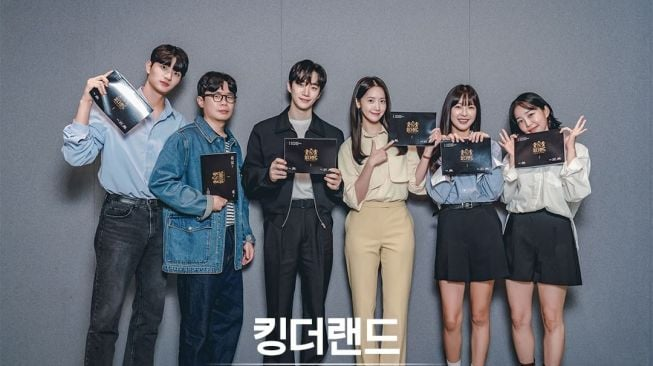

King The Land

King the Land adalah sebuah serial drama Korea yang dapat disaksikan melalui layanan streaming Netflix. Pada tanggal 4 Juni 2023, enam episode dari serial ini telah tersedia untuk ditonton. Salah satu faktor yang menarik untuk mempertimbangkan menontonnya adalah kehadiran Yoona SNSD, sebagai salah satu pemeran utamanya. Dia berperan bersama Lee Junho, yang sebelumnya aktif sebagai anggota grup 2PM.
King the Land menjanjikan unsur komedi yang membuatnya menjadi tontonan yang ringan. Namun, drama ini juga akan menggali masalah yang menjadi titik fokus dari pembentukan karakter Gu Won. Oleh karena itu, ulasan mengenai sinopsis King the Land akan dibahas lebih lanjut dalam artikel ini.
Cheon Sarang adalah seorang perempuan yang lulus dari SMA dan memiliki impian untuk menjadi seorang hotelier. Meskipun bersaing dengan kandidat yang memiliki tingkat pendidikan lebih tinggi, Sarang tidak gentar untuk mendaftar. Akhirnya, ia diterima sebagai seorang anak magang. Kepribadiannya yang ramah dan kerja keras membawa Sarang diangkat sebagai pegawai tetap, ditempatkan di bagian lobi. Salah satu hal yang membuatnya menonjol adalah senyumannya. Manajer Gu Hwa Ran mewawancarainya langsung dan menerima Sarang sebagai pegawai. Sarang tidak sendirian, ia tinggal bersama dua temannya, Oh Pyeong Hwa dan Kang Da Eul. Pyeong Hwa adalah seorang pramugari yang merintis karirnya dari awal dan sering mendapat perlakuan kasar dari senior dan penumpang pesawat.
Sementara itu, Da Eul bekerja sebagai penjual di sebuah toko tas dan aksesoris di pusat perbelanjaan di tengah kota. Meskipun menghadapi tantangan yang sama dengan teman-temannya, Da Eul tetap berjuang. "King the Land" menyoroti perjalanan hidup Sarang yang gigih dalam bekerja sebagai seorang hotelier. Ia membuktikan bahwa dengan kesabaran dan kerja keras, impian dapat terwujud suatu hari nanti.
King Hotel, di bawah kepemimpinan Direktur Gu Il Hun, mengelola beberapa anak perusahaan. Gu Il Hun, yang memiliki dua anak dari dua istri yang berbeda, menugaskan Gu Hwa Ran, anak perempuan sulungnya, untuk mengelola beberapa perusahaan, termasuk King Hotel. Sementara itu, Gu Won, anak keduanya, sering menghabiskan waktunya di luar negeri, namun kadang-kadang berkunjung ke Korea Selatan untuk mengawasi beberapa hal. Meskipun tanpa sepengetahuan ayah mereka, Gu Il Hun, terjadi konflik antara kedua anaknya. Gu Hwa Ran meyakini bahwa dirinya yang pantas mewarisi kepemilikan ayah mereka atas seluruh perusahaan yang dimiliki. Hwa Ran meminta Gu Won untuk berkonsentrasi pada pendidikannya di luar negeri dan tidak ikut campur dalam urusan bisnis perusahaan. Hwa Ran yakin bahwa Gu Won tidak tertarik pada hal-hal semacam itu.

Awalnya, Gu Won tampak acuh tak acuh dan kurang peduli. Meskipun pada awalnya hanya menyetujui permintaan kakaknya untuk melanjutkan pendidikan di London, Inggris, Gu Won nampaknya kurang bersemangat. Namun, ketika ia diperintahkan untuk pulang ke Korea Selatan, khususnya saat makan malam dengan sang Ayah dan Hwa Ran, Gu Won ditawari kesempatan untuk memulai karier bekerja. Ia menerima tawaran tersebut dan memilih King Hotel.
Kejutan yang besar dan kebingungan yang mendalam menyelimuti Hwa Ran ketika Gu Won menerima tawaran tersebut. Ia tidak pernah menyangka bahwa Gu Won akan menerima posisi tersebut, terutama karena Hwa Ran berharap bahwa perusahaan akan menjadi miliknya kelak. Gu Won kemudian diangkat menjadi Manajer di King Hotel. Sejak kedatangannya di Korea Selatan, Gu Won tinggal di hotel. Sang Ayah menggunakan tenaga Hubungan Masyarakat (Humas) untuk menyelenggarakan pelantikan dan makan malam sebagai bentuk perayaan atas kehadiran Gu Won. Hal ini membuat Hwa Ran menyadari bahwa Ayahnya sangat mempertimbangkan peran Gu Won dalam masa depan perusahaan.
Pada hari pertama bekerja, Gu Won diharapkan untuk bertemu dengan kakaknya, Hwa Ran, yang memiliki jabatan yang lebih tinggi. Namun, Gu Won menyadari bahwa ia lupa membawa dokumen dan ponselnya di kamarnya. Daripada menunggu seseorang untuk membawakan barang-barang tersebut, Gu Won memutuskan untuk pergi sendiri ke kamarnya. Saat berada di sana, ia mendengar suara seseorang dari dalam kamar mandi. Ternyata, orang yang ada di dalam kamar mandi adalah Sarang, yang sedang mengalami masalah pencernaan yang mendesak. Sarang sebenarnya ditugaskan oleh atasan untuk mengambil barang yang ditinggalkan oleh Gu Won, tetapi dia terpaksa pergi ke kamar mandi terlebih dahulu karena sakit perut yang tidak tertahankan. Kamar tempat mereka berada adalah suite dengan fasilitas yang mewah dan modern, termasuk kamar mandi yang memiliki dinding transparan yang bisa dikendalikan secara elektronik. Sarang, yang baru mengenal fitur tersebut, terlihat tertarik dan mencobanya beberapa kali. Saat dia mengaktifkan mode transparan, Gu Won tiba-tiba muncul di depan pintu bilik tersebut. Mereka saling menatap, dengan Sarang masih duduk di toilet. Pertemuan ini menjadi awal dari interaksi mereka, karena keduanya bekerja di King Hotel.

Gu Won memiliki reputasi sebagai pemuda yang cerdas, berwibawa, namun kurang terampil dalam hubungan asmara, dan tidak suka dengan senyuman palsu dari orang di sekitarnya. Suatu hari, ia terlibat dalam konflik keluarga yang berhubungan dengan pembagian warisan King Group. Sebagai akibatnya, Gu Won memutuskan untuk datang ke King Hotel dan pada awalnya dianggap sebagai karyawan paruh waktu di sana.